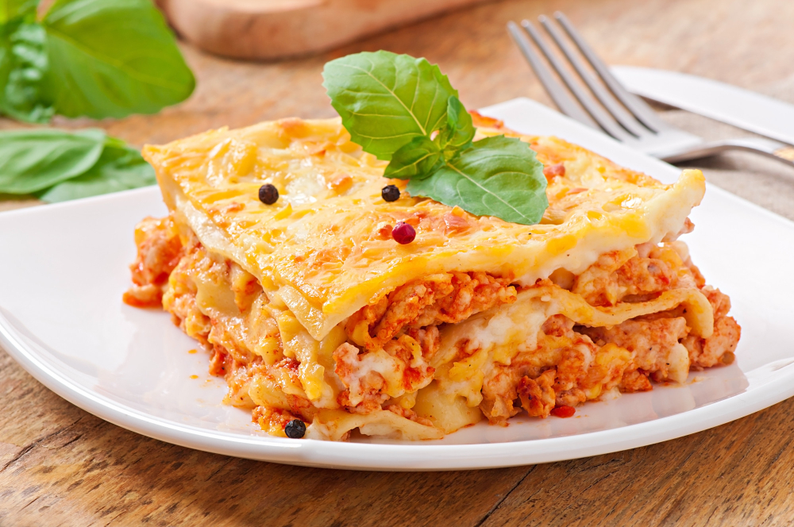

Lasagna

Description
Lasagna is a classic Italian dish made with layers of pasta, meat, tomato sauce, and melted cheese. It is a hearty and delicious meal that is perfect for sharing with family and friends.
This version combines seasoned ground beef with mozzarella and ricotta cheese for a creamy texture and traditional flavor.
Ingredients
- 12 lasagna noodles
- 500g ground beef
- 2 cups tomato sauces
- 1 chopped onion
- 2 garlic cloves
- 2 cups mozzarella cheese
- 1 cup ricotta cheese
- Salt and pepper to taste
- Olive oil
Steps
- Preheat to oven to 180°C (350°F).
- Cook the onion and garlic in a pan with olive oil.
- Add the ground beef and cook until browned.
- Add the tomato sauce, salt and pepper, then cook for a few minutes.
- In a baking dish, add a layer of pasta, follow by meat, ricotta, and mozzarella.
- Repeat the layers until the dish is full.
- Bake for 35-40 minutes.
- Let it rest for a few minutes before serving.
Home